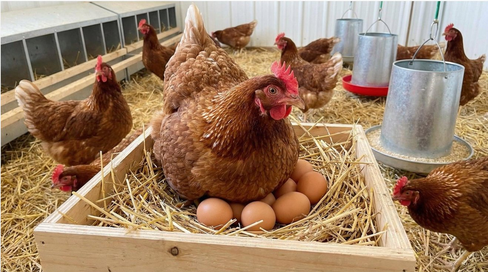

Production agricole
Préparation de projets de culture du maïs et de production alimentaire.
Entreprise multiservices • Kolwezi, RDC
Bienvenue chez SEMAD SARL. Une ambition congolaise fondée sur la confiance, l'excellence et le développement, au service des projets et des communautés.
Confiance • Excellence • Développement

Qui sommes-nous ?
Saint Étienne Mwamba Développement (SEMAD SARL) est un projet d'entreprise multiservices basé à Kolwezi, dans le Lualaba. Nous préparons des initiatives responsables qui associent ambition entrepreneuriale, qualité de service et développement local.
En savoir plus sur notre société →Transformer des idées en projets utiles, développer des compétences et construire des relations professionnelles durables.
Ce que nous préparons
Explorez nos axes d'activité et découvrez les projets en préparation.
Les photographies présentées illustrent les activités envisagées et ne constituent pas une preuve d’installations déjà exploitées par SEMAD SARL. Ces domaines présentent les orientations de SEMAD SARL. Certaines activités sont en préparation et les prestations réglementées restent soumises aux autorisations requises.
Pourquoi SEMAD SARL ?
Notre approche privilégie l'écoute, la transparence, la responsabilité et la recherche de solutions réalistes. Nous voulons bâtir une entreprise qui grandit avec ses clients, ses équipes et ses partenaires.
Découvrir nos valeurs →Nos perspectives
Préparation de projets de culture du maïs et de production alimentaire.
Projet d'élevage de poules pondeuses et de production d'œufs.
Initiatives envisagées en informatique et en coupe et couture.
Grandir ensemble
Vous êtes candidat, fournisseur, client ou partenaire potentiel ? Découvrez l'espace qui correspond à votre projet.
Rester informé
Retrouvez nos annonces, projets et nouvelles dans notre espace Actualités.
Consulter les actualités →Notre société • SEMAD SARL
Saint Étienne Mwamba Développement (SEMAD SARL) est un projet d’entreprise multisectorielle basé à Kolwezi, dans la province du Lualaba, en République démocratique du Congo.
SEMAD SARL est née en 2026 d’une volonté entrepreneuriale : réunir plusieurs domaines d’activité au sein d’une même structure, pour répondre progressivement aux besoins économiques et sociaux des communautés, des particuliers et des entreprises.
Son développement est envisagé par étapes, autour du commerce, de l’agriculture et de l’élevage, des services aux entreprises, de la formation professionnelle et de la sécurité et du gardiennage.
La société poursuit ses démarches de structuration administrative et de préparation opérationnelle. Les activités soumises à autorisation, notamment le gardiennage, ne pourront être exercées qu’après obtention des autorisations nécessaires.

Développer des activités et des services utiles, accessibles et responsables, tout en contribuant à la création d’opportunités professionnelles et économiques.
Devenir progressivement une entreprise de référence en RDC, reconnue pour la qualité de ses prestations, son professionnalisme et sa contribution au développement durable.
Structurer nos activités, développer des partenariats durables, renforcer les compétences locales et créer de la valeur pour nos clients et les communautés.
Organisation et gouvernance
La structure envisagée repose sur une direction générale, une direction générale adjointe et des fonctions de gestion destinées à accompagner chaque activité.
Selon le développement de la société, les fonctions de ressources humaines, finances, administration, juridique et conformité, contrôle interne, marketing et opérations seront progressivement organisées.
Entrer en contact avec SEMAD SARL →SEMAD SARL prévoit de développer ses activités depuis Kolwezi, dans la province du Lualaba.
Consulter la localisation de Kolwezi ↗SEMAD SARL • Nos cinq domaines
Découvrez chaque domaine d’intervention, les projets envisagés et les possibilités de collaboration.
Approvisionnement, achats, vente et distribution de biens selon les besoins.

Culture du maïs et projet avicole de poules pondeuses pour la production locale.

Étude des besoins et coordination de solutions adaptées aux organisations.

Programmes pratiques envisagés en informatique, coupe et couture.

Projet de surveillance, contrôle des accès et gardiennage, sous réserve d’autorisation.
Ces visuels présentent les domaines et projets envisagés. Les prestations de sécurité privée et de gardiennage restent soumises aux autorisations légales requises.
Nos principes
La vie de notre entreprise
Retrouvez ici les nouvelles, annonces et projets de SEMAD SARL à Kolwezi.
Les annonces, projets et nouvelles de SEMAD SARL seront publiés ici.
Nous contacter sur WhatsAppCarrières & relations professionnelles
Découvrez nos espaces de contact pour les candidats, fournisseurs, clients et partenaires.
Emplois & recrutement
SEMAD SARL souhaite développer progressivement des équipes compétentes dans ses différents domaines d’activité. Cette rubrique permettra de consulter les opportunités lorsqu’elles seront officiellement publiées et de manifester son intérêt.
Aucune offre d’emploi n’est annoncée actuellement. Toute candidature spontanée doit préciser le domaine souhaité, les compétences et les coordonnées du candidat.
Candidature spontanée →Fournisseurs
Nous souhaitons identifier des fournisseurs sérieux pour les besoins de nos projets : fournitures commerciales, équipements informatiques, matériel agricole, intrants d’élevage et autres produits pertinents.
Présentez votre entreprise, les produits ou services proposés, votre zone de livraison et vos conditions commerciales. Une prise de contact ne constitue pas une commande.
Devenir fournisseur →Clients
SEMAD SARL souhaite construire des relations de confiance avec ses clients et prospects, comprendre leurs besoins et étudier des solutions dans ses domaines d’activité.
Décrivez votre besoin, le service concerné, le lieu d’intervention et les délais souhaités. Les prestations réglementées restent soumises aux autorisations nécessaires.
Présenter une demande →Partenaires
Nous sommes ouverts à l’étude de collaborations techniques, commerciales et institutionnelles pour développer des projets responsables à Kolwezi et dans d’autres régions de la RDC.
Présentez votre organisation, votre domaine d’expertise, l’objet de votre proposition et les résultats attendus. Toute collaboration fera l’objet d’une évaluation préalable.
Proposer un partenariat →Contact et devis
Présentez-nous votre besoin : nous étudierons votre demande.
⌖ Kolwezi, province du Lualaba, RDC